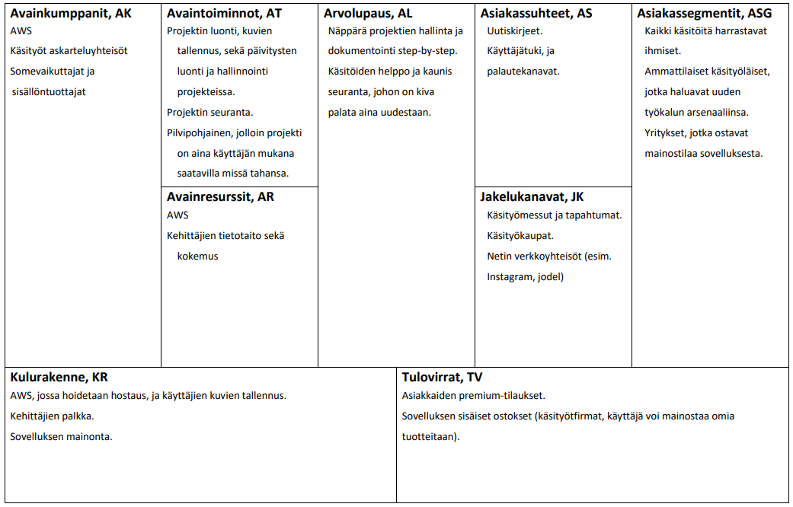

Vastuualueet Craftfoliossa
Itselleni projektissa vastuualueiksi tuli business, aws sekä backend. Näitten työjakauma oli karkeasti 80% backendiä 15% aws:ssään, ja loput sitten businessiin.
Alkuun löimme viisaat päämme ainon kanssa yhteen, ja mietitttiin, että devataan molemmat jonkinnäköinen bäkkäri kasaan, minkä jälkeen valitaan niistä toinen, minkä kehitystä jatketaan prjoketimme varsinaiseksi bäkkäriksi. Tähän emme käyttäneet kovin kauaa aikaa, vaan oikeastaan koska itse sain oman bäkkärini ensimmäisenä (jotenkin) toimivaan kuntoon, niin valitsimme sen ja käytimme sitä pohjana loppuun asti. Näinollen, bäkkärin "mielenkiintoiset" arkkitehtuaaliset ratkaisut johtauvat valitevasti allekkirjoittaneen kädettömyydestä, enkä voi heittää bäkkärikaveriani bussin alle. Monet hommat tuli tehtyä kohtalaisen loogisesti, mutta lopulliseen koodiin jäi myös mahtavia ratkaisuita, jotka pidemmässä kehitystyössä olisi poistettu. Yksi tällaisista ratkaisuista liittyy siihen, miten bäkkäri käynnistyy ja ottaa yhteyden tietokantaan. Mykyinen ratkaisumme jäi valitettavasti tilanteeseen, missä koko homma menee nurin, jos tietokanta ei ole pystyssä ennen kuin varsinainen bäkkäri käynnistyy. Tämä johtaa siihen, että pienelläkin tietokannan toiminnalla häiriöllä on suuri merkitys kokonaisuuden toimintaan. Eli jatkokehtiyksessä olisi toivottavaa, että bäkkäri osaa yrittää uudelleen tietyin väliajoin yhtetyttä tietokantaan nurin menenmisen sijaan.
Lätkäsy pilveen
Päätimme käytännössä heti kättelyssä, että bäkkäri tullaan lätkäisemään AWS:ssään, sillä se oli pilvipalvelu, josta kaikilla oli jonkin verran kokemusta etukäteen. Sekä bäkkäri että frontti pyörivät Elastic Beanstalkin päällä, joskin bäkkärin tietokanta oli decouplattu tästä instanssista, jotta se pysyisi päällä esimerkissä päivityksiä tehdessä niin, ettei koko tietokantaa resetoitaisi.(Lisää hienoja suunnitteluvaintoja team bäkkäriltä). Tietokantaan myös tykitettiin alussa tavaraa lokaalilta devauskannalta, jotta pääsimme varmistumaan sen toiminnasta. Aws:ssän suhteen homma pysyi kohtalaisen simppelinä koko tuotannon ajan. Jatkokehitystä silmällä pitäen, julkaisuputken rakentaminen olisi ollut erittäin hyödyllistä, sillä se parantaisi varisinkin testausta huomattavasti, sekä mahdollistaisi sen automatisoinnin ennen varsinaista deployintia.

Bäkkärin rakenteesta ja valinnoista
Bäkkärin toimintaperiaate pidettiin varsin simppelinä. Esimerkkinä tieto tuli frontista bäkkäriin, jossa se otettiin jossa se otettiin kiinni routeissa, josta se ohjaattiin oikeaan controlleriin, joka sitten teki tarvittavat kutsut tietokantaan, sekä kertoi onnistumisesta/epäonnistumisesta eteenpäin. Sovelluksen sisäänkirjatuminen tehtiin käyttäen googlen Oauth2:sta. Tämä aiheutti jonkin verra harmaita hiuksia, sillä tämän käyttö vaati SSL sertifikaattia. Tämä ongelma pystyttiin kiertämään devausvaiheessa hyväskyttävällä tavalla. Sertifkoimme oman (ei luotetun) sertin, ja käytimme sitä. Näin käyttäjän nettiselain varoitti aina self-signatusta sertistä, mutta vältimme oikeasta sertistä maksamisen kurssin aikana, koska tätä varten tarvitsisemme oman URL:osoitteen, eikä beanstalkin automaattisesti antama enää kelpaisi. Kirjautumisen tilaa seurattiin js:ssän session middlewarella. Tämä valittiin pääosin sen yksinkertaisuuden ja helppoläyttöisyyden vuoksi. Karkeasti jaettuna bäkkäri siis jaettiin kolmeen eri osaan. Controllerit, Routet, sekä pää-instanssi. Tämän lisäksi tietokannan alustaminen ja Oauth login setuppi jaettiin omiin kokonaisuuksiina, mutta ne olivat varsin irrallaan ympärillä olevasta kokonaisuudesta.
Business
Projektimme business puoli jäi verrattaen kevyelle tollalle. Tein suunnitelmat AWS:ssän kustannuksista, sekä siitä, kuinka plajon devaajien palkkaaminen maksaisi, mutta sen jälkeen homma jäi pitkälle tauolle keskittyessäni bäkkäriin sekä AWS:ssään. Loppupuolella projektia julkaisimme IG käyttäjän, jolla voitiin julkaista promoa projektiin liittyen. Tämän lisäksi selvitimme erilaisia mahdollisuuksia, joilla saisimme sovelluksen kohdeyleisöän tietoon. Tällaisiksi todettiin esimerkiksi erilaiset käsityömessut, ja tapahtumat. Nämä olisivat erityisen tärkeitä asioita meille, sillä sovelluksen potenttiaalista käyttäjäpohjaa voisi olla muuten hyvin vaikea tavoittaa verrattuna moniin muihin projekteihin.
